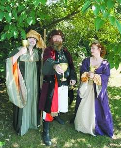

|
Fair city of Florence prepares for Renaissance Faire 
William Freeman,
Gregory Bowling and Donna Miles are dressed in character for the
Renaissance Feast.
Jim
Hannon/Timesdaily
Hear, hear lords and ladies on both sides of the river: Events leading up to the 2008 Alabama Renaissance Faire will soon begin. This year, new activities are on the pre-festival schedule along with traditions such as the Renaissance feast and costume-making workshop. The faire, to be held on Oct. 25-26 at Wilson Park in Florence, will feature local and national merchants, artists, belly dancing, theater and Renaissance refreshments such as fried turkey legs. At 2 p.m. on Sunday, the Renaissance Month Medieval Film Series starts at the Florence-Lauderdale Public Library conference room with two episodes of the 1980s British TV series "Robin of Sherwood." The series will continue each Sunday at the same time featuring films "Ladyhawke and "Excalibur." Peasants and aristocrats alike will gather at the Kennedy-Douglas Center for the Arts 9 a.m.-2 p.m. on Oct. 11 for a costume-making workshop. Participants need to supply their own embellishments and fabric with a width of at least 60 inches and length of 3 1/2 yards to make a tunic. The idea is that the tunic is an inexpensive alternative to pricey, handmade costumes showcased at Wilson Park. A little medieval mud or dirt won't mar them. The park is a parade of costumes. "That's where people pull all the stops," said Donna Miles, costume and entertainment coordinator for the faire. "You'll find every kind of costume. That's where you see heavy velvets and jewels." A night with entertainment by Roundtable members on the new riverboat, the Pickwick Belle, will take place Oct. 21 from 7-9 p.m. Commoners and royalty are invited to the feast on Oct. 18. More than 100 of the 200 tickets available have been sold, said Billy Warren, who founded the faire in 1987. He urges those planning on attending the faire to buy tickets soon because response from out-of-town attendees has increased. "People don't have a good time when it gets over 200. It becomes trough feeding and we are not into that," Warren said. Tickets are available at the Kennedy-Douglass Center for the Arts for $25. Jim Matterer of Gode Cookery catering in Newark, Del. will create a menu with a Christopher Columbus theme. All food to be prepared was discovered during Columbus' travels. The current reign of His Majesty King Gregory Bowling will wind down the day of the feast when the new heir to the throne inherits a coin in his or her food. He will be officially dethroned during the festival. In between events, Roundtable members will go to area schools dressed in their heavy skirts, leather boots and tights to educate students about medieval customs, lifestyle and dance. Students expressed their Renaissance voice in art and sonnet contests to be exhibited at the Richards Center in Florence. That's the point of the Renaissance Festival. "I started the festival in order to tie it to the curriculum," said Warren, curriculum director for Florence city schools. "That's our real reason for being is education." This page ©
2008 Gode
Cookery
http://www.godecookery.com
|

BACK TO: Alabama Renaissance Faire
A Boke of Gode Cookery Alabama
Renaissance Faire
Alabama
Renaissance Faire
© James L. Matterer
Please visit The Gode Cookery Bookshop